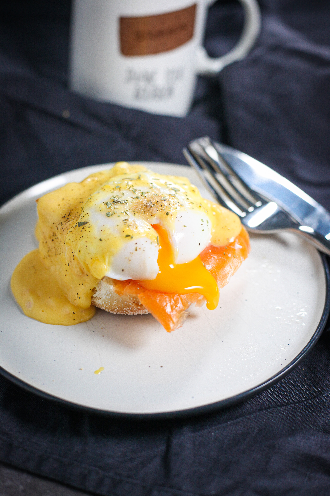

Ensalada Belen
80 min
3
Medio
Ingredientes
- Berenjena - 4 UN
- Morron amarillo - 1 UN
- Morron rojo - 2 UN
- Aceite de oliva - C/N
- Vinagre de vino - C/N
- Miel - C/N
- Pasa de uva rubia - 100 GR
- Vino blanco - 100 CC
- Castaña de cajú - 100 GR
Preparación
- Macerar las pasas en vino blanco 24 horas
- Cortar berenjenas y morrones en cubos de 2cm x 2cm
- Hornearlas con aceite hasta que esten doradas
- Tostar las castañas
- Hidratar las paas de uva en vino blanco,escurrir.
- Unir todos los ingredientes
- Armar la ensalada
- Condimentar con una vinagreta a base de una parte de vinagre,tres partes de aceite de oliva,sal ,pimienta,y miel a gusto

Milanesa de Pollo a la Casanova
60 min
8
Dificil
Ingredientes
- Aceite de oliva - 50 CC
- Ajo brunoise - 50 GR
- Inglesa para empanar - 200 CC
- Jamón cocido en brunoise - 200 GR
- Pan rallado - 400 GR
- Pata y muslo de pollo - 4 UN
- Perejil picado - 20 GR
Preparación
- Deshuesar y emparejar los muslos (4 u x 250 gr).
- Mezclar el pan rallado, el jamón picado, el ajo picado y el perejil picado.
- Pasar los muslos por la inglesa y empanarlos con la mezcla anterior.
- Cocinar en horno a 180ºC rociados con aceite de oliva.

Sopa de Zapallo y Endinias
40 min
3
Medio
Ingredientes
- Manteca - C/N
- Vermouth seco - 25 CC
- Aceite de girasol - C/N
- Zapallo anco en matignon - 750 GR
- Caldo corto - 500 CC
- Crema de leche - 200 CC
- Endivia ciselada - 200 GR
- Azúcar - 50 GR
- Pimienta negra molida - C/N
- Semilla de calabaza - 20 GR
Preparacion
- Saltear el zapallo en aceite, agregar el caldo y cocinar.
- Espumar.
- Una vez cocido procesar, llevar a fuego e incorporar la crema.
- Cocinar 5 minutos más.
- Condimentar.
- Saltear las endibias en aceite, condimentar con sal y azúcar.
- Desglasar con vermouth y unir con la preparación de zapallo.
- Tostar las semillas de calabaza e incorporar a la sopa.

Huevos Benedictinos
25 min
2
Fácil
Ingredientes
- Huevo poché - 4 UN
- Jamón cocido - 100 GR
- Manteca - 50 GR
- Pan Brioche - 150 GR
- Salsa Holandesa - 400 CC
Preparacion
- Cortar el pan en rodajas y tostarlo en manteca.
- Disponer en cada rodaja una feta de jamón y sobre este un huevo poché.
- Salsear con la salsa holandesa.